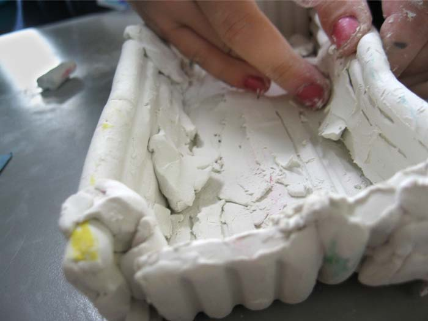

	<div id="oneCol" class="row">
    <div class="large-12 columns">
        <div class="medium-10 medium-offset-1 end columns">
        <h3>Creative Partnerships with Longmeadow School, Milton Keynes (2008)</h3>
    		<p>I was commissioned to explore, with staff and pupils from year 5, the  value of using photography as a means of recording scientific experiments.<br />
      	Photography helped their scientific learning, aided their ability to  work in small groups, enhanced independent decision - making, and was a  particularly successful way to involve learners with special needs. <br />
    	The children created a permanent gallery of images some of which are shown here.</p>
		</div>
			<div class="center">
        <a href="longmeadow002.html" title="View next Longmeadow School photograph"></a>


    <span class="links"><a href="longmeadow002.html">next</a></span>
        </div>
     </div>
</div>


